Qué conseguir, dónde pedirlo y cómo armarlo, fase por fase. Pensado para que lo podamos hacer entre los tres sin saber de antemano de drones ni de electrónica.
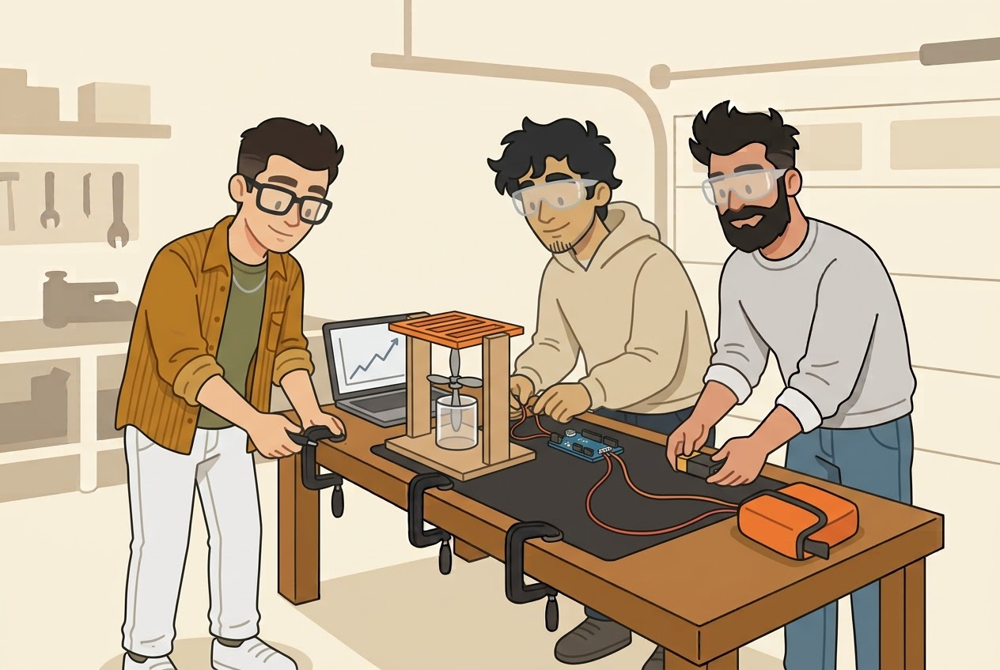
Versión del 30/10/2026. Precios de MercadoLibre del 30/10/26, sin impuestos y con el dólar MEP a $1.568. Cambian rápido: revisarlos antes de comprar. Las ilustraciones son imágenes de referencia, no fotos de pruebas. Los números del dron son aproximados hasta medirlos.
Medimos antes de construir. Cada fase confirma un número del diseño antes de gastar en la siguiente, así nunca tiramos un aro entero porque el motor no empujaba lo que creíamos. El software (simulador, detección con el iPhone y botonera) va en paralelo.
| Fase 1 · Banco | Fase 2 · Cuerpo | Fase 3 · Vuelo atado | |
|---|---|---|---|
| Qué decide | Si el motor empuja lo que dice el fabricante, cuánto suma el ducto y cuánto quitan las rejillas. Si el sensor distingue agua de mar de lluvia | Si el aro sostiene a un adulto agarrado de un costado sin darse vuelta, y si las cajas no entran agua | Si vuela estable atado, si el corte por agua apaga los motores y si se destraba con el imán |
| Qué armamos | Un solo motor dentro de un ducto, sobre una balanza, en la mesa del garage | El cuerpo del aro en telgopor, con su forma final, probado en pileta con pesas | El dron completo: motores, cajas, electrónica, rejillas, piel y botonera |
| Cuánto cuesta | Unos $1.164.000 (USD 742) | Unos $103.000 (USD 66), más el corte | Unos $1.079.000 (USD 688), aprox. |
| Cuánto tarda | 2 semanas de envíos y 2 fines de semana (aprox.) | 1 semana de taller y 1 fin de semana (aprox.) | 1 a 2 meses (aprox.) |
| Pasamos si | Cada motor con ducto y rejillas empuja 1,7 kg o más | Un adulto se agarra del canto de adentro y el aro no se para de canto | Vuela atado 3 minutos sin sustos y el corte por agua funciona |
Todo junto da unos USD 1.496 sin impuestos ni lo que falta cotizar (los cortes, la celda de 10 kg, la piel y la botonera). El plan anterior daba unos USD 2.012. La IA a bordo (unos USD 370) queda para después del primer vuelo.
Tres cosas que nos ahorran plata y problemas.
Las publicaciones de China avisan un límite de 5 envíos internacionales por año por persona. Si cada uno compra con su cuenta, usa su propio cupo. El paquete llega a nombre y a la dirección de quien compra. Cómo cuenta MercadoLibre el límite (por compra o por paquete) está a validar. Sugerencia de reparto:
| Compra importada | Fase | Quién |
|---|---|---|
| Motores Hobbywing, pack de 4 | 1 | Lucho |
| ESC del banco | 1 | Eli |
| Controladora y ESC del dron | 3 | Augus |
| GPS | 3 | Lucho |
| Radio y receptor | 3 | Eli |
Después vemos entre los tres cómo se financia cada compra. El reparto es solo para no gastar el cupo de uno.
Para los motores: "Hola, ¿son Hobbywing XRotor 2812 900KV originales? ¿El pack trae 4 motores con sus tornillos? Gracias."
Para la batería: "Hola, ¿cuánto pesa la batería y qué ficha trae (XT60 o XT90)? Gracias."
La batería y la hélice son lo único peligroso de todo esto.
La batería LiPo se carga adentro de la bolsa ignífuga, sobre una superficie que no se queme, con alguien mirando. Nunca de noche sola, nunca si está hinchada o golpeada.
Una hélice de 8 pulgadas a fondo corta. Nadie se pone en el plano de la hélice, siempre con anteojos, y la batería se conecta último y se desconecta primero.
Un solo motor con su hélice, adentro de un ducto igual a los del aro, apoyado sobre una balanza electrónica. Medimos cuánto empuja y cuánto consume. En la misma mesa probamos el sensor que corta los motores en el agua.
| Qué | Qué poner en el buscador | Precio | Origen |
|---|---|---|---|
| Soldador | estación soldador T12 G Tools 72W | $95.101 | Local |
| Estaño | estaño 63/37 0.8 mm con flux | $10.500 | Local |
| Multímetro | multímetro Uni-T UT89XD | $37.900 | Local |
| Cable grueso | cable silicona 12 AWG rojo negro | $29.900 | Local |
| Termocontraíble | kit termocontraíble 560 piezas | $15.200 | Local |
| Anteojos, x3 | anteojos de seguridad Libus | $10.340 | Local |
| Motores, pack de 4 | Hobbywing XRotor 2812 900KV 4 unidades | $127.997 | China |
| Hélices, un par | Gemfan 8046 tripala | $49.501 | Local |
| ESC | ESC EMAX BLHeli 60A 2-6S | $53.168 | China |
| Batería | LiPo Pulse 6S 5200 mAh 80C | $270.000 | Local |
| Cargador con fuente | cargador Imax B6AC con fuente | $219.990 | Local |
| Wattímetro | wattímetro 150A | $79.000 | Local |
| Fichas, 2 pares | fichas XT90 macho hembra (o XT60 si la batería trae XT60) | $22.063 | Local |
| Celda de carga | celda de carga 10 kg HX711 | a cotizar | Local |
| Placa ESP32 | ESP32 USB-C NodeMCU | $15.990 | Local |
| Bolsa ignífuga | bolsa ignífuga lipo 29x23 | $37.991 | Local |
| Policarbonato | policarbonato compacto 1 mm 1,2 x 1,2 | $47.033 | Local |
| Sargentos, x2 | sargento Wadfow 300 mm | $22.800 | Local |
| Sensor de agua | módulo LM393 sensor de lluvia con sonda | $5.604 | Local |
| Electrodos | varilla roscada inoxidable 316 1/4 | $13.750 | Local |
| Total | Sin la celda, el corte láser ni la manguera | $1.163.828 |
La plancha de policarbonato alcanza para el ducto del banco y para los cuatro ductos del dron. La celda pasa de 5 a 10 kg porque con el banco encima la de 5 kg queda justa (aprox., a validar). La manguera para el labio (unos 20 mm de diámetro, 70 cm) se consigue en cualquier ferretería.
Todo el banco sale de un solo pedido: dos planchas de MDF y los dos discos de rejilla en
acrílico, con el material del taller. Los archivos están en
gavia-hardware/cad/banco/. Un taller posible es
este de Almirante Brown.
Mandar banco_mdf_1.dxf, banco_mdf_2.dxf y rejilla_banco.dxf con
este mensaje:
Hola, necesito un corte láser con material incluido. Son dos planchas de 600 x 400 mm en MDF (fibrofácil) de 5,5 mm, con los archivos banco_mdf_1 y banco_mdf_2, y dos discos en acrílico de 6 mm con el archivo rejilla_banco (la misma pieza dos veces). Las medidas están en milímetros. El rojo es corte y el azul es grabado, si no pueden grabar ignoren el azul. ¿Cuánto sale y para cuándo estaría?
Antes de mandarlo, con la celda y el motor en la mano, chequear que los agujeros
coincidan con el dibujo. Si no coinciden, se cambia un número en banco_laser.py y
se vuelve a generar el archivo.
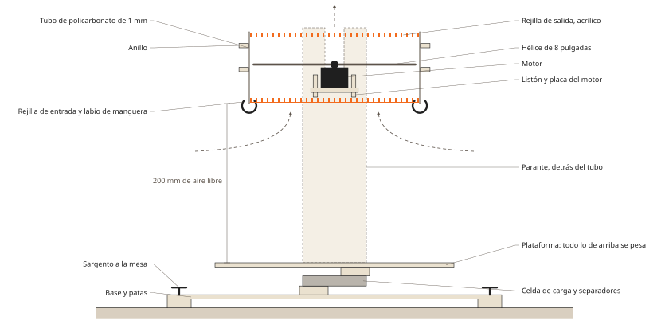
Todo lo que está arriba de la celda se pesa, ducto y rejillas incluidos. Por eso el ducto va montado sobre la plataforma y no sobre la mesa.
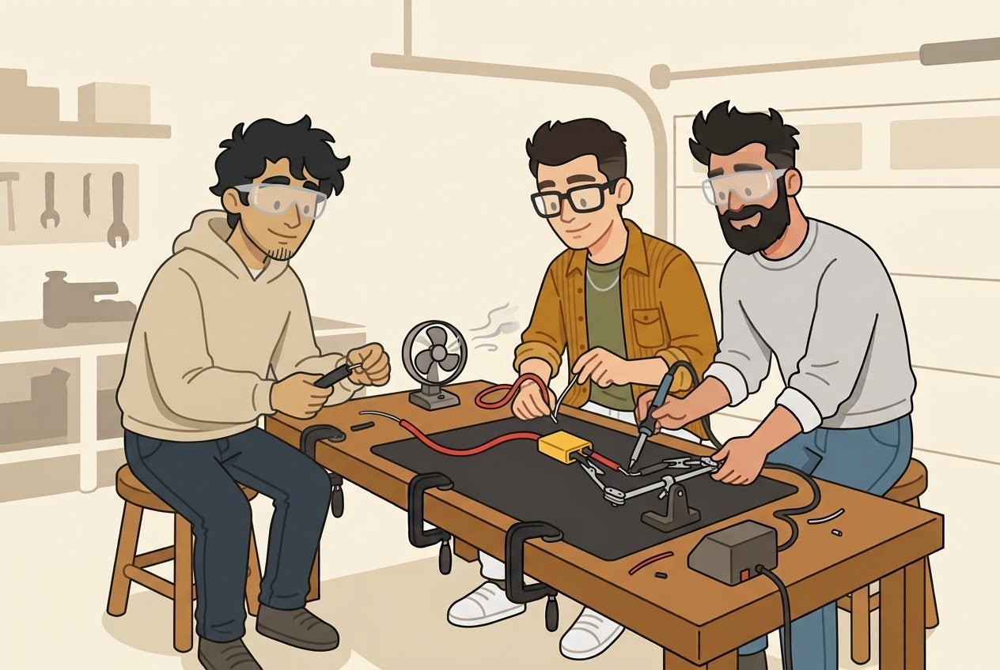
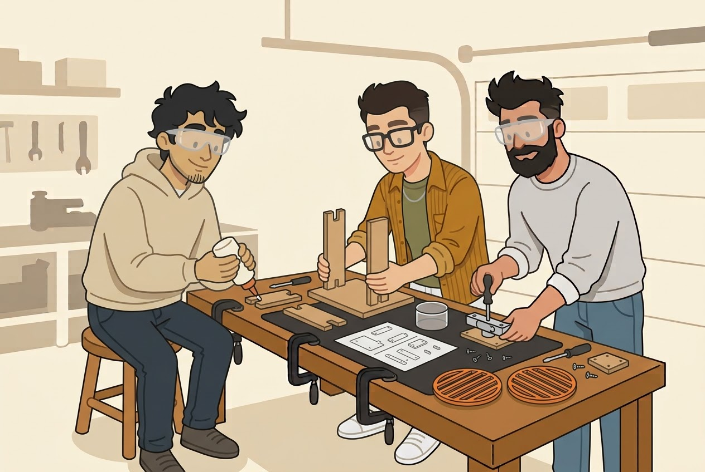
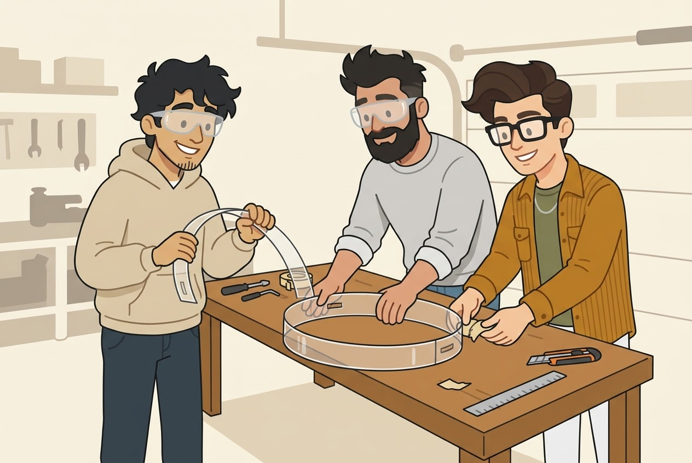
Dos circuitos separados. El de potencia lleva mucha corriente y usa cable grueso. El de datos es el de la plaquita y va con cables finitos.
gavia-firmware. Está pendiente y lo armamos antes de la primera medición.Tres configuraciones con el mismo motor y la misma hélice. En cada una, el ESP32 sube el acelerador de a pasos del 30 al 100 % y anota empuje, volts y amperes en un archivo.
| Configuración | Qué nos dice | |
|---|---|---|
| a | Hélice libre, sin el tubo | Si el motor empuja lo que dice Hobbywing (2.771 g al 100 % según su tabla). Si da mucho menos, el motor no es original |
| b | Con el tubo y el labio | Cuánto suma el ducto |
| c | Tubo, labio y las dos rejillas | Cuánto quitan las rejillas. Es el número que importa |
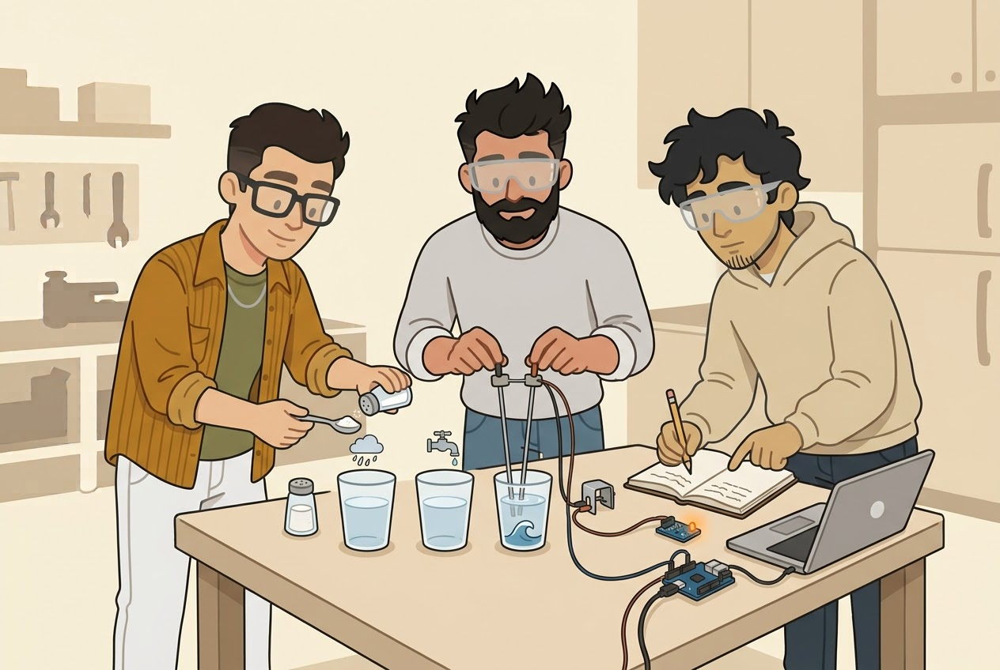
Buscamos un número fijo que separe el agua de mar de la lluvia. El vaso de pileta importa porque las primeras demos van a ser ahí: si con agua de pileta no dispara, lo anotamos para la fase 3. El circuito que traba los motores hasta pasar el imán se arma recién en la fase 3, con el umbral ya medido.
Pasamos a la fase 2 si cada motor, con ducto, labio y rejillas, empuja 1,7 kg o más al 100 %. Es el doble del peso del dron repartido en cuatro (3,4 kg, aprox.). Si la batería pesa más que los 480 g del modelo, se suma la diferencia. Si no llega, antes de comprar nada más probamos con un motor más grande o le sacamos peso al diseño.
El aro de 80 cm en telgopor, cortado por un taller en tres capas de 3 cm que pegamos nosotros. Primero lo probamos en una pileta con pesas en lugar de la electrónica. Si pasa, ese mismo cuerpo es el del dron.
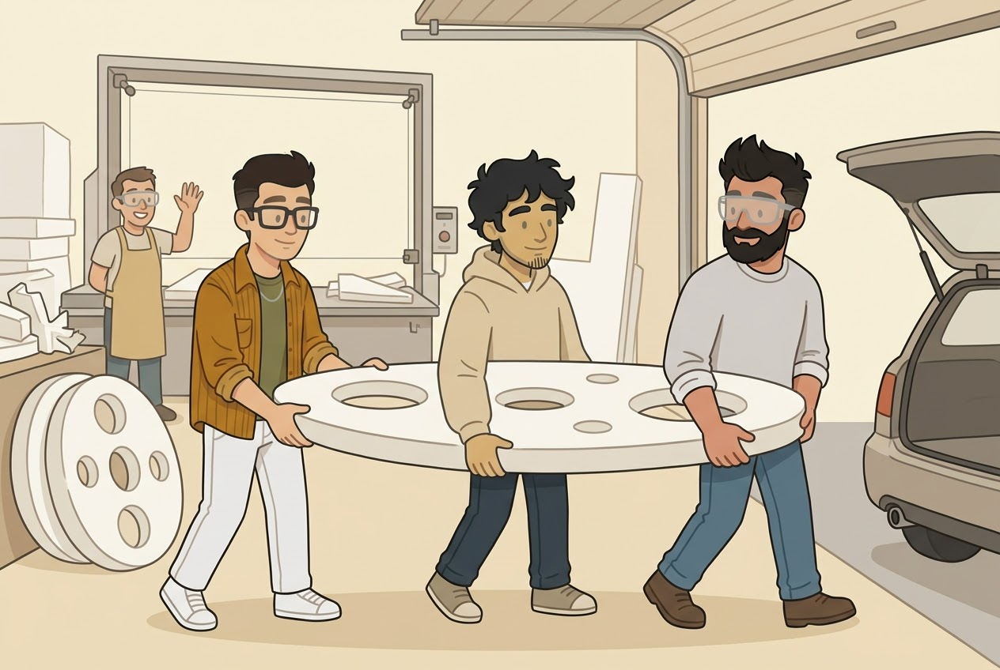
| Qué | Qué poner en el buscador | Precio |
|---|---|---|
| Corte de las 3 capas, con material | Taller de telgopor o router CNC (ver abajo) | a cotizar |
| Pegamento, x2 | Novolastic adhesivo para telgopor | $21.091 |
| Dinamómetro | balanza colgante digital 50 kg | $20.500 |
| Pesas, x3 | lastre buceo forrado 1 kg | $45.717 (aprox.) |
| Cajas estancas, x2 | caja de paso estanca 120x170x75 IP65 Kalop | $16.022 |
| Entrada a la pileta | Pileta techada (las descubiertas abren en diciembre) | a cotizar |
| Total | Sin el corte ni la pileta | $103.330 |
Las pesas: la publicación cotizada da $30.478 por dos. El cuerpo pesa unos 0,65 kg y el dron unos 3,4 kg, así que faltan unos 2,75 kg de lastre más la diferencia de la batería (aprox., a validar). Los cuatro tubos de los ductos salen de la plancha de policarbonato de la fase 1.
Sirve un taller de corte con hilo caliente o uno de router CNC. Opciones para consultar:
Telgopor Quilmes,
Deletrearte y
RotulArte
(CABA, CNC desde $61.440 la hora). Los archivos están en gavia-hardware/cad/cuerpo/:
mandar capa_exterior.dxf, capa_media.dxf y tapon_caja.dxf.
Hola, necesito cortar tres capas de un aro en telgopor (EPS) de 30 mm y 30 kg/m3, con material incluido si tienen. Son dos veces el archivo capa_exterior y una vez capa_media, más dos tapones chicos con el archivo tapon_caja. El aro mide 80 cm de diámetro, las medidas están en milímetros. Los agujeros de adentro los pueden encarar por donde les quede mejor. ¿Cuánto sale y para cuándo estaría?
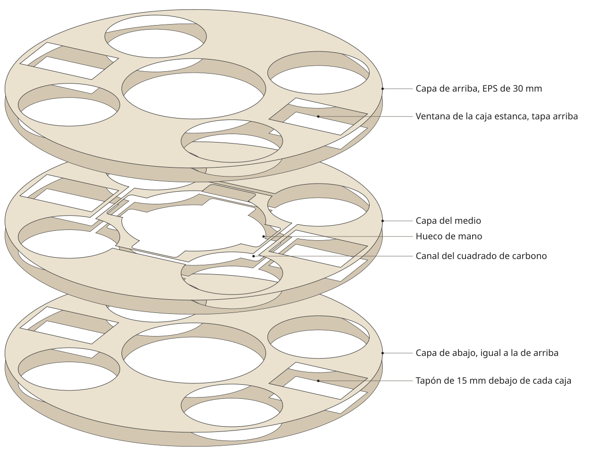
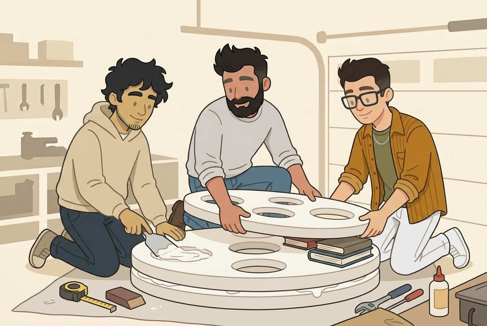
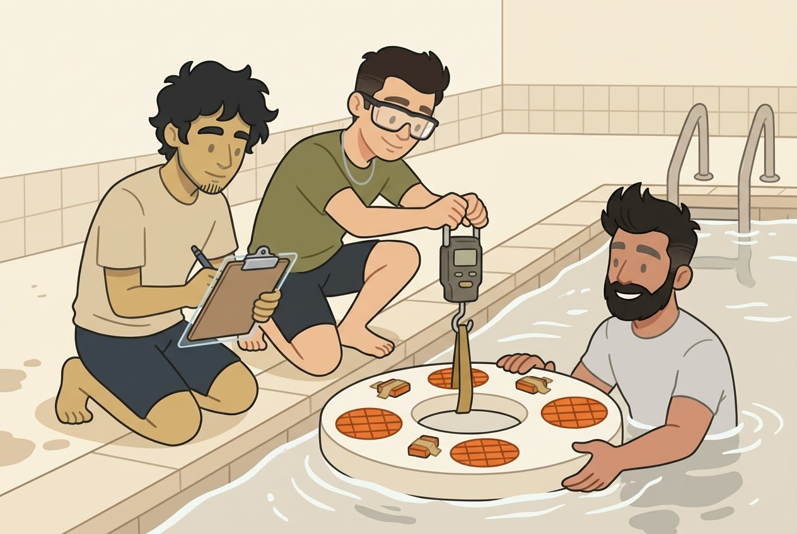
Pasamos a la fase 3 si el aro sostiene a un adulto agarrado del canto de adentro sin pararse de canto (el modelo dice que aguanta unos 125 N, aprox., a validar) y las cajas salen secas.
Armamos el dron completo sobre el cuerpo de la fase 2 y lo hacemos volar atado a una estaca, en un campo abierto. Esta fase se confirma con los números del banco, así que la lista es una guía y no un pedido cerrado.
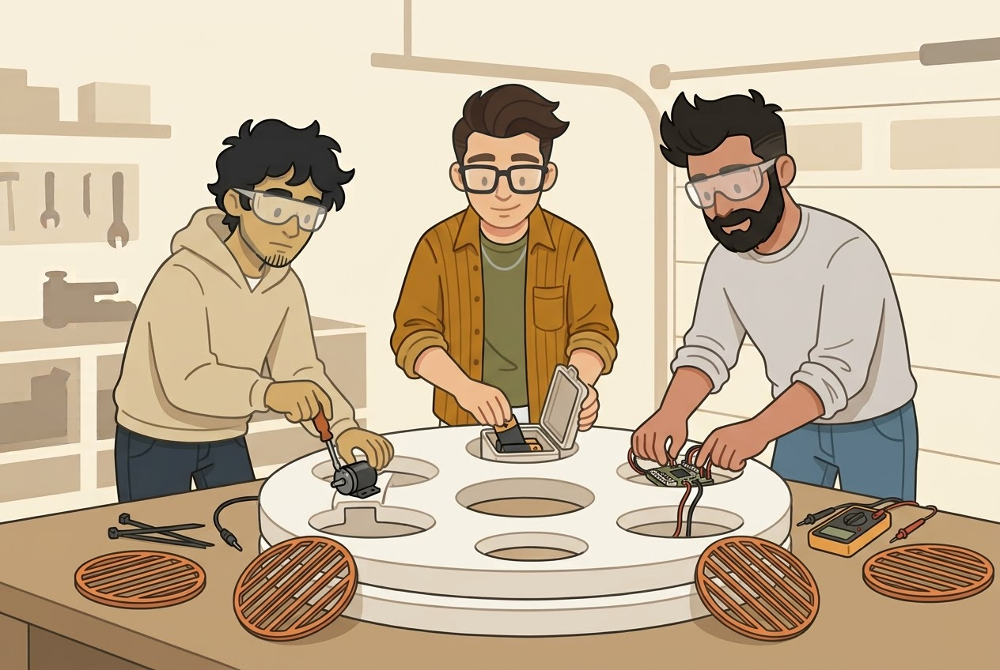
| Qué | Qué poner en el buscador | Precio | Origen |
|---|---|---|---|
| Controladora y ESC | Se elige al terminar el banco: un stack con ESC 4 en 1 de 6S y 55 A o más por canal, con soporte oficial de ArduPilot. Plan B: Matek H743-WING V3, 3 ESC EMAX 60A y placa Matek FCHUB-12S | $501.106 (plan B) | China |
| GPS | GPS MicoAir M10G-5883 | $69.906 | China |
| Radio | Radiomaster Pocket ELRS | $201.977 | Internac. |
| Receptor | Radiomaster RP3 ELRS 2.4 | $86.355 | Internac. |
| Tubo de carbono | tubo carbono 13x10x1000 | $96.000 | Local |
| Hélices, 2 pares más | Gemfan 8046 tripala | $99.002 | Local |
| Buzzer | buzzer activo 5V | $6.519 | Local |
| Bloqueo por agua | relé biestable 5V, reed switch NA, imán neodimio 10x3 | $18.175 | Local |
| Rejillas del dron, x8 | Mismo archivo de láser que el banco, en acrílico de 6 mm | a cotizar | Taller |
| Piel | Taller de tablas de surf (laminado epoxi sobre EPS) o membrana acrílica a pincel | a cotizar | Taller |
| Total | Con el plan B, sin rejillas, piel ni botonera | $1.079.040 |
Nunca resina poliéster sobre el telgopor: lo derrite. Los liners salen de la plancha de policarbonato de la fase 1. Plan B de controladora más barato: MicoAir743 a $127.216, también con soporte de ArduPilot.
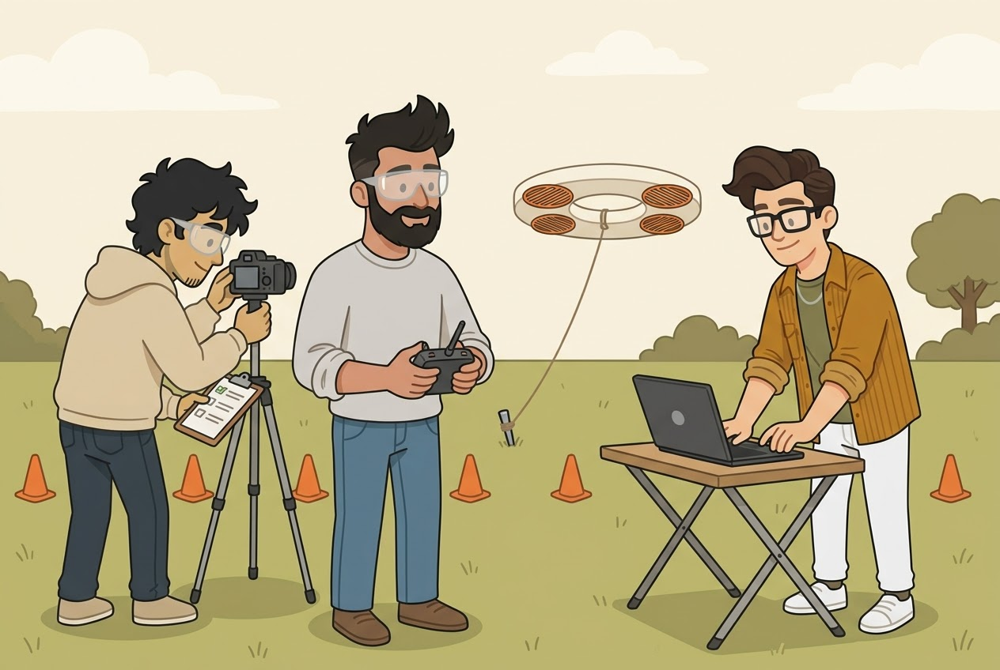
Listo para la demo si vuela atado 3 minutos estable, el corte por agua apaga los motores y se destraba solo con el imán. Después viene el viento, con el dron atado arriba de un auto.
La caja que queda fija en el puesto del guardavidas. Va por un solo cable USB‑C a la laptop, que le da corriente y lleva los mensajes. No tiene pila.
INCIDENTE REAL sirve con alerta y sin ella: quiere decir "hay alguien en peligro, salí". Si el guardavidas vio a alguien antes que la cámara, aprieta igual y el dron va al candidato más probable. Ese apriete queda registrado como un caso que la cámara no vio, y es el dato que más sirve para mejorar la detección.
FALSO POSITIVO cancela y el dron vuelve. La pantallita muestra la probabilidad, el sector y la cuenta regresiva.
Todo se compra hecho: caja estanca IP65 de 200 x 120 x 75 mm, dos pulsadores de 30 mm,
pantalla OLED de 1,3 pulgadas, un ESP32, un LED, un buzzer y un prensacable. La lista con qué
buscar está en gavia-hardware/cad/blender/botonera_piezas.md.
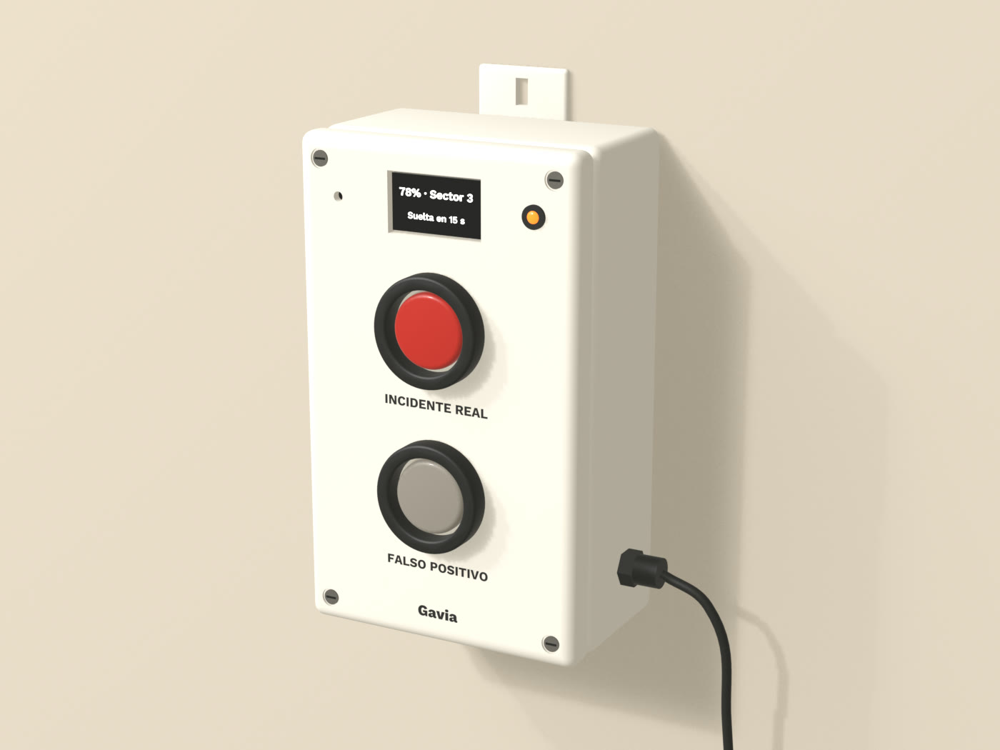
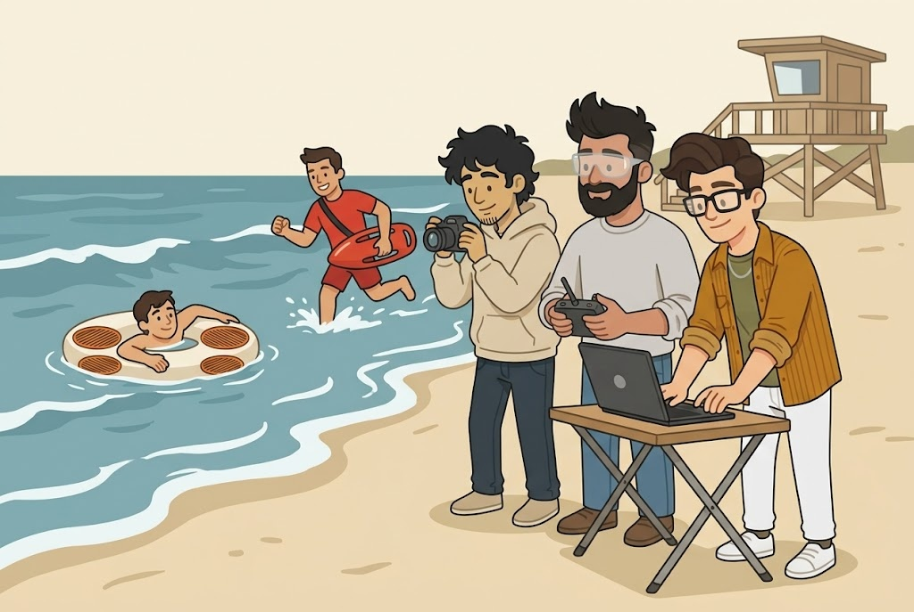